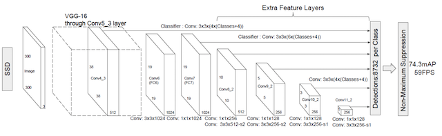
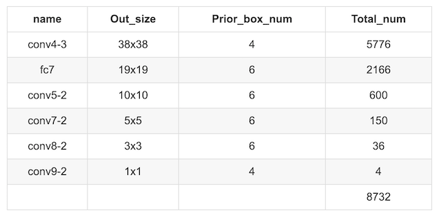
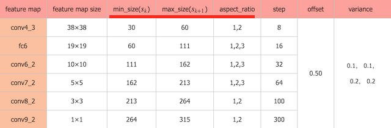

5.9 SSD算法原理
学习目标
- 目标
- 知道SSD的结构
- 说明Detector & classifier的作用
- 说明SSD的优点
- 应用
- 无
5.9.1 SSD
5.9.1.1 简介
SSD算法源于2016年发表的算法论文，论文网址：https://arxiv.org/abs/1512.02325
SSD的特点在于:
- SSD结合了YOLO中的回归思想和Faster-RCNN中的Anchor机制，使用全图各个位置的多尺度区域进行回归，既保持了YOLO速度快的特性，也保证了窗口预测的跟Faster-RCNN一样比较精准。
- SSD的核心是在不同尺度的特征特征图上采用卷积核来预测一系列Default Bounding Boxes的类别、坐标偏移。
网络发展顺序fasterrcnn->yolov1->ssd->yolov2->fpn->maskrcnn->yolov3(18)
5.9.1.2 结构
以VGG-16为基础，使用VGG的前五个卷积，后面增加从CONV6开始的5个卷积结构，输入图片要求300*300。

5.9.1.3 流程

SSD中引入了Defalut Box，实际上与Faster R-CNN的anchor box机制类似，就是预设一些目标预选框，不同的是在不同尺度feature map所有特征点上使用PriorBox层
5.9.1.4 Detector & classifier

Detector & classifier的三个部分：
- 1.PriorBox层：生成default boxes，默认先验框
- SSD借鉴了Faster R-CNN中anchor的理念，每个单元设置尺度或者长宽比不同的先验框，预测时候的边界框（bounding boxes）是以这些先验框为基准的，在一定程度上减少训练难度。
- 2.Conv3 x 3:生成localization， 4个位置偏移
- 3.Conv3 x 3:confidence，21个类别置信度(要区分出背景)

5.9.1.5 PriorBox层-default boxes
default boxes（priorobx/先验框）类似于RPN当中的滑动窗口生成的候选框，SSD中也是对特征图中的每一个像素生成若干个框。

- 先验框特点分析：
- priorbox：相当于faster rcnn里的anchors，预设一些box，网络根据box，通过分类和回归给出被检测到物体的类别和位置。每个window都会被分类，并回归到一个更准的位置和尺寸上

根据输入的不同aspect ratio 和 scale 以及 num_prior来返回特定的default box，以feature map上每个点的中点为中心，生成一些列同心的prior box
- 计算公式：
- 1、正方形prior box最小边长为和最大边长为：
- 2、每在prototxt设置一个aspect ratio，会生成2个长方形，长宽为：
- 长：
- 宽：
如下图展示的就是它的长宽设置：

- 3、最终每个feature map对应box的min_size和max_size由以下公式决定：
公式中的m是指进行预测时使用feature map的数量，如SSD300使用conv4-3等6个不同维度（Detector & classifier）的feature maps进行预测，所以 m=6。同时原文设定s_min=0.2 ，s_max=0.9。
- 对于conv4-3：k=1, min_size=s1x300,max_size=s2x300...
所以得到默认下面每层的框大小参数：
- 如下面为不同大小bbox在每个不同层的设置(SSD使用感受野小的feature map检测小目标，使用感受野大的feature map检测更大目标。)

1、SSD网络prior_box:打印出来的形状为：
Tensor("concat_2:0", shape=(?, 7308, 8), dtype=float32)
# 其中某一层的结构输出
layer {
name: "conv6_2_mbox_priorbox"
type: "PriorBox"
bottom: "conv6_2"
bottom: "data"
top: "conv6_2_mbox_priorbox"
prior_box_param {
min_size: 111.0
max_size: 162.0
aspect_ratio: 2.0
aspect_ratio: 3.0
flip: true
clip: false
variance: 0.10000000149
variance: 0.10000000149
variance: 0.20000000298
variance: 0.20000000298
step: 32.0
offset: 0.5
}
5.9.1.5 prior box使用过程
localization与confidence这两者的意义如下，主要作用用来过滤，训练

1、边界框的location预测边界框位置解码
包含4个值 (center_x,c_centery,w,h)，分别表示边界框的中心坐标以及宽高。但是真实预测值其实只是边界框相对于先验框的转换值(论文里面说是offset类似于YOLO那种）
那么注意假设我们的网络最终的预测值L是一个中间值，会需要经过一个解码转换(decode)。假设下面P真正的得到输出的边界框，d为先验框的位置： 那么预测边界框的真实位置为：
当然反过来也是能够得到一种预测值的编码关系的。
2、SSD 预测边界框trick
这里就是设置variance超参数来调整检测值，就需要手动设置超参数variance，用来对l的4个值进行放缩，此时边界框需要这样解码
3、代码展示过程
代码中的位置输出也会经过这样的计算：
def decode(default_boxes, locs, variance=[0.1, 0.2]):
""" 对default_boxes进行解码到坐标coordinates
Args:
default_boxes: tensor (num_default, 4)
of format (cx, cy, w, h)
locs: tensor (batch_size, num_default, 4)
of format (cx, cy, w, h)
variance: variance for center point and size
Returns:
boxes: tensor (num_default, 4)
of format (xmin, ymin, xmax, ymax)
"""
# 解码过程
locs = tf.concat([
locs[..., :2] * variance[0] *
default_boxes[:, 2:] + default_boxes[:, :2],
tf.math.exp(locs[..., 2:] * variance[1]) * default_boxes[:, 2:]], axis=-1)
# (cx, cy, w, h)->(xmin, ymin, xmax, ymax)
boxes = transform_center_to_corner(locs)
return boxes
def encode(default_boxes, boxes, variance=[0.1, 0.2]):
""" Compute regression values
Args:
default_boxes: tensor (num_default, 4)
of format (cx, cy, w, h)
boxes: tensor (num_default, 4)
of format (xmin, ymin, xmax, ymax)
variance: variance for center point and size
Returns:
locs: regression values, tensor (num_default, 4)
"""
# (xmin, ymin, xmax, ymax)->(cx, cy, w, h)
transformed_boxes = transform_corner_to_center(boxes)
# 编码过程
locs = tf.concat([
(transformed_boxes[..., :2] - default_boxes[:, :2]
) / (default_boxes[:, 2:] * variance[0]),
tf.math.log(transformed_boxes[..., 2:] / default_boxes[:, 2:]) / variance[1]],
axis=-1)
return locs
问题：SSD中的多个Detector & classifier有什么作用？
SSD的核心是在不同尺度的特征图上来进行Detector & classifier 容易使得SSD观察到更小的物体
5.9.2 训练与测试流程
5.9.2.1 train流程
- 输入->输出->结果与ground truth标记样本回归损失计算->反向传播, 更新权值
1. 样本标记：
先将prior box与ground truth box做匹配进行标记正负样本,每次并不训练8732张计算好的default boxes, 先进行置信度筛选，并且训练指定的正样本和负样本, 如下规则
正样本
- 1.与GT重合最高的boxes, 其输出对应label设为对应物体.
- 2.物体GT与anchor iou满足大于0.5
负样本：其它的样本标记为负样本
在训练时, default boxes按照正负样本控制positive：negative=1：3
2. 损失
网络输出预测的predict box与ground truth回归变换之间的损失计算
置信度是采用 Softmax Loss(Faster R-CNN是log loss)
位置回归则是采用 Smooth L1 loss (与Faster R-CNN一样)
- 所以位置误差仅针对正样本进行计算。要先对ground truth的g进行编码得到（预测框解码的反向过程）

其中
- N是match到GT（Ground Truth）的prior box数量
- alpha参数用于调整confidence loss和location loss之间的比例，默认alpha=1
- 代表第i个prior box匹配到了第j个并且class同为p类别的GT box
- 匹配过程：IoU判断
3、数据增强
采用数据扩增（Data Augmentation）可以提升SSD的性能，主要采用的技术有水平翻转（horizontal flip），随机裁剪加颜色扭曲（random crop & color distortion），随机采集块域（Randomly sample a patch）（获取小目标训练样本）。SSD上数据增强的效果增加明显
5.9.2.2 test流程
- 预测过程比较简单，对于每个预测框，首先根据类别置信度确定其类别（置信度最大者）与置信度值，并过滤掉属于背景的预测框。然后根据置信度阈值（如0.5）过滤掉阈值较低的预测框。对于留下的预测框进行解码，根据先验框得到其真实的位置参数。
5.9.3 SSD实验与总结
5.9.2.1 实验
- 1、SSD在VOC2007，VOC2012及COCO数据集上的性能，如下面所示。相比之下，SSD512的性能会更好

- 2、多尺度特征图对SSD的影响

- 3、SSD与其它检测算法的对比结果（在VOC2007数据集）如表2所示，基本可以看到，SSD与Faster R-CNN有同样的准确度，并且与Yolo具有同样较快地检测速度。

5.9.3.3 总结

从图中看出SSD算法有较高的准确率和性能，兼顾了**速度和精度。SSD算法的优点应该很明显：运行速度可以和YOLO媲美，检测精度可以和Faster RCNN媲美。当然也有一些缺点：
1、需要人工设置prior box的min_size，max_size和aspect_ratio值。网络中prior box的基础大小和形状不能直接通过学习获得，而是需要手工设置。
2、虽然采用了pyramdial feature hierarchy的思路，但是对小目标的recall依然一般，并没有达到超越Faster RCNN太多。主要可能是这是由于SSD使用conv4_3低级feature去检测小目标，而低级特征卷积层数少，存在特征提取不充分的问题。
下面两个为github实现的版本：有兴趣可以阅读使用
5.9.4 总结
- SSD的结构
- Detector & classifier的组成部分以及作用
- SSD的训练样本标记
- GT与default boxes的格式转换过程